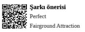

Multinational Profesyonelleri
Türk dili ve edebiyatı kabına sığdıramadığımız, çokuluslu iş profesyonelleri
Business casual pantolonunu yine kuru temizlemeden almayı unutmuştu. Alternatif olarak giyeceği casual pantolonun company dress code’una aykırı olabilme ihtimali, yılsonu performans değerlendirme toplantısında bu konunun malzeme olarak gündeme gelmesine neden olabilir miydi?